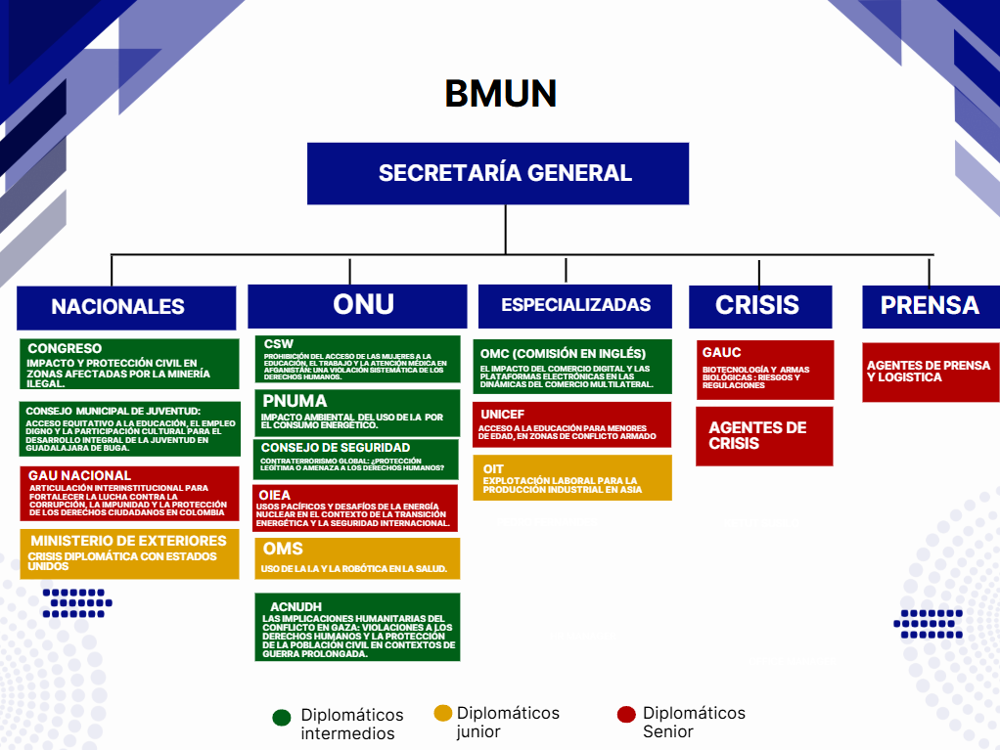

Un espacio de diplomacia, debate y cooperación internacional donde los estudiantes simulan el trabajo de las Naciones Unidas.
Saber másBMUN es un Modelo de Naciones Unidas donde los participantes representan delegaciones de distintos países y debaten problemáticas internacionales actuales, desarrollando habilidades de oratoria, negociación y pensamiento crítico.
Simulación de órganos como el Consejo de Seguridad, Asamblea General y otros espacios diplomáticos.
Cada estudiante representa un país y defiende sus intereses con argumentos sólidos y estratégicos.
Se discuten conflictos internacionales, cambio climático, derechos humanos y economía mundial.
Esta idea viene a partir de una socialización sobre la importancia que han tenido los diferentes modelos que se realizan en los colegios de Buga; en los cuales se intercambian conocimientos y contactos los diferentes delegados que participan en estos. Por lo tanto, nuestra idea fue crear un modelo en el cual no sea solo un colegio el que la organice, sino varios colegios, para crear un modelo grande en conjunto y que no existan barreras académicas.

¿Cómo transformar los Modelos de Naciones Unidas organizados por instituciones educativas en un espacio municipal intercolegiado que fortalezca la participación juvenil, la formación política y el liderazgo cívico en la ciudad?
Desarrollo del pensamiento crítico, habilidades de argumentación, análisis político y comprensión de dinámicas internacionales.
Creación de un espacio intercolegiado que promueva la participación juvenil, fortalezca el liderazgo cívico y genere impacto real en la comunidad.